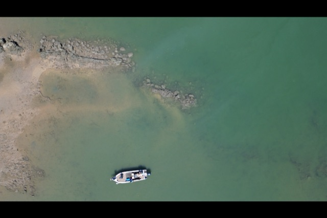
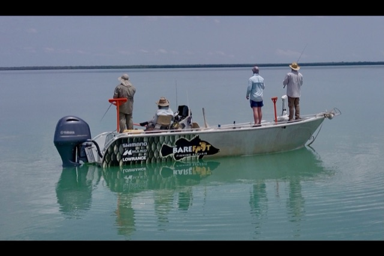
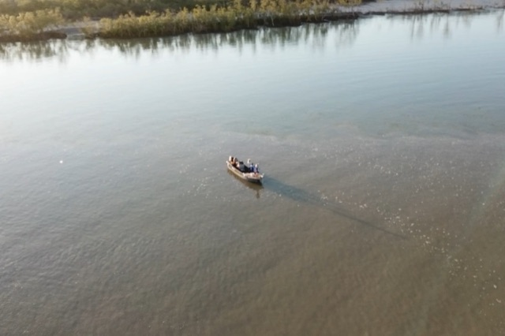
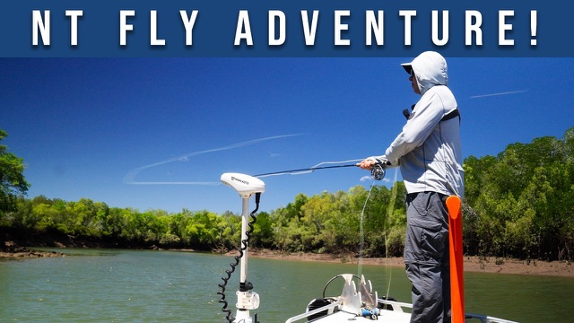
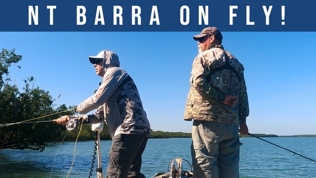
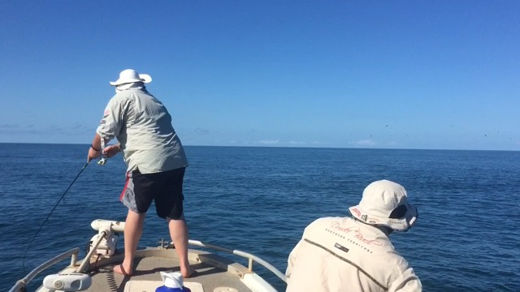
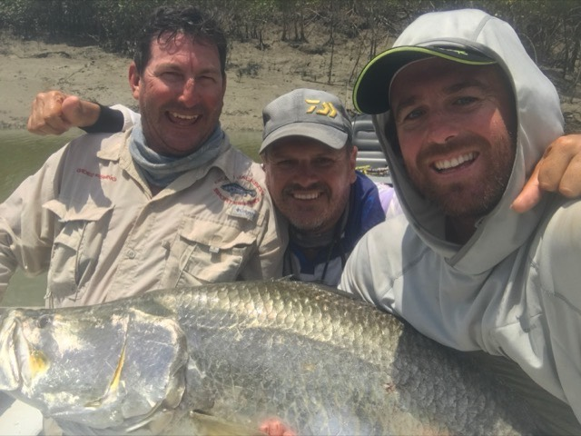
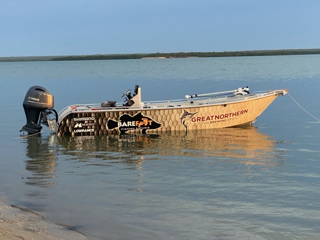

The library
Fifteen years of Top End fishing, written down
Some of this is the long-form stuff Watty teaches on the water. Some of it is him talking barra with people worth listening to. Filter it however suits.

The Four Pillars of Top End Barra Fishing
The framework Watty uses to plan every session — Where & When, Wind & Weather, Time & Tide, Techniques & Tactics.
Read the article →
Best Time to Fish for Barra in the Top End
A season-by-season guide — run-off, dry and build-up — and how to pick the trip that suits you.
Read the guide →
The Tides Cheat Sheet
The one-page planner Watty uses to line up the best sessions of the year — tides, seasons and timing at a glance.
Grab it free →
Fly Fishing Bynoe Harbour
A full Bynoe session on fly — the flats, the plan and the fish.
Watch on YouTube →
Barramundi on Fly
Saltwater fly for barra in the Top End — what the takes actually look like.
Watch on YouTube →
Darwin's Best Kept Fishing Secrets
Steve "Starlo" Starling out on the water around Darwin.
Watch on YouTube →
Surface Action on Saratoga & Tarpon
Top-water in the freshwater country — fish eating off the surface.
Watch on YouTube →
The Barefoot channel
Short clips from the water — flies, fish and the odd croc.
Visit the channel →
The Barefoot Outdoors Podcast
Top End fishing, gear and the stories behind the trips. The back-catalogue lands here as soon as the feed is wired in.
Landing soon
Radio spots
Watty's fishing segments on ABC Radio Darwin, Hot100 and 2GB — written up so they're searchable long after they air.
Landing soonMore landing every week — podcast episodes will auto-pull from the feed once it's connected.